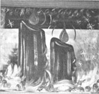
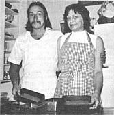

If you now operate, or have ever operated, a successful home business that was inspired by an article you read in MOTHER, tell us about it in around 500 words (write to THE MOTHER EARTH NE WS P. O. Box 70, Hendersonville, North Carolina 28791): Be sure to mention when and where you started your venture and with how much "seed money"; what you make (net), and anything else that might be of assistance to other entrepreneurs. If your story is used in this column, you'll receive [1] the satisfaction of knowing that you may help someone else start a business and [2] a free two-year new or renewal subscription to THE Mother Earth News (restricted)
We were already into November of last year when I faced the fact that I couldn't think of a single way to earn money for Christmas gifts. Then my husband handed me our most recent issue of THE Mother Earth News, which he'd opened to Leslie Peters Cline's article, "A Holiday Artist" (No. 72, page 10). Well, since I'd decorated windows as a teenager, I knew right away that Leslie's business was the one for me!
We held a brainstorming session and concluded that I could get started at a cost of as little as $10. With that amount I purchased sponge brushes from the hardware store and powdered tempera from a nearby art supply shop.
Then I decided it'd be worthwhile to have business cards printed. They cost me $20 more, but proved to be the only "advertising" I needed.
Once I had all my equipment, I picked a street with a row of storefront windows and went to each one, leaving my card and explaining my service. Soon I was lining up appointments to begin painting the day after Thanksgiving. And I was more than busy from that day until a week before Christmas . . . I worked five half-days a week and probably could have painted away the other half-days as well. In fact, while I was on the job, people would stop and ask me to decorate windows for them. . . no selling was necessary. Why, in one instance I solicited a single pizza store and was hired to do five!
I soon learned to vary my rates with the size of the window and - in the course of my first season - earned over $300. This year I'm going to advertise early and confirm all jobs before Thanksgiving so that I can concentrate on the enjoyable part - the actual painting - from then until Christmas. I'll also deliberately solicit jobs from businesses with shops in more than one location . . . and I think I can double that $300!
Annie Olson
Spokane, Wash.
As a school librarian, I never managed to save enough during my ten salaried months to make it through summer vacation. So in May of 1980 I decided to try a variation on the caretaking businesses I'd seen described in MOTHER ("Housesitting as a Way of Life", No. 37, page 22, had particularly inspired me). My idea was to offer pet (especially dog) care . . . either in my clients' homes or in my own household.
Well, my first prospective customers all asked to leave their pooches at my house, so I had to find out whether I could legally board the animals. It didn't take me long to learn that I can house up to five adult dogs at a time, including my own two. (Otherwise, I'd have to operate as a "commercial kennel" . . . and that would require more land than the rather skimpy acreage I own.)
I was able to begin my business with no cash outlay. I simply cleaned my two shaded outdoor pens and laid salvaged 2 X 6's on the ground along the fence to discourage diggers. Next, I cleaned the doghouses, and made sure that my own animals were free of parasites and that all their inoculations were current.
I decided to depend solely on word-of-mouth advertising, and so relayed the news of my services to coworkers, friends, acquaintances, salespeople, the library's referral service, and the local veterinarians.
Although I charge $5.00 daily, which is high for this area, I attract plenty of dog owners who regard their pets as family members and want for them the kind of attention they receive at home. The dogs spend the nights indoors, and the "civilized" pooches have the run of the house. Rug-wetters or fighters are confined to exercise pens or crates when in the house.
My business has continued to pick up as my reputation has spread, and I've added kennelsitting to my services. In August 1981, for example, I watched over a collie breeder's 13-dog kennel for a week and - in return - got $100, room and board, and free access to the produce from a huge garden.
Petsitting involves responsibility, messy chores, and occasional inconveniences, but - for those who love dogs - sloppy puppy kisses and grateful wags of the tail are terrific bonuses. [EDITOR'S NOTE: For more tips on this shoestring enterprise, turn to the article on page 106 of issue 76.]
Claire Stevens
Federalsburg, Md.
I enjoy baking bread for my family, so when (in 1973) my daughter Mary gave me some copies of THE Mother Earth News (restricted) , I was immediately intrigued by two particular articles. "Bread for Health" (issue 29, page 49) and "Hot Bread!" (issue 43, page 90d) brought me to the realization that there were lots of folks who'd be willing to buy the wholesome loaves that I made.
I set right to work, cleaning and painting a small cabin - already equipped with an electric stove, a double sink, cupboards, and counters - that sat behind our house. My husband built a 3' X 5' work table and covered it with formica (at a cost of $65). Muslin for dish towels set us back $15 . . . cookie sheets and bread pans came to $20 . . . stainless steel dishpans - for mixing and raising dough - totaled $24 . . . and wooden spoons added another $2.40.
With all the preparations made, we posted a sign down at the road and another on the cabin itself . . . and those two notices, along with the information passed on by our satisfied customers, constituted our entire advertising campaign.
As the business became established, our son Bill mixed, kneaded, and baked bread each night, and - when he was finished - I made cinnamon rolls and cookies. In average weeks we netted $350 . . . and a holiday would usually add another $150 to that week's total. All in all, we were doing pretty danged good!
Bill helped me run the business for two years . . . after which he went elsewhere to continue his bakery career, and I carried on the enterprise for five more years. I'm not baking anymore, though . . . instead I've written and self-published The Red Cabin Cookbook. I'm offering it for sale for $8.95 plus $1.25 shipping and handling . . . and folks who'd just like information on running a successful homestyle bakery can simply send me a letter accompanied by a stamped envelope.
Pat Harris
Dept. TMEN
Natapoc Mountain Press
Box 252
Leavenworth, Wash. 98826
|
|
 |
 |